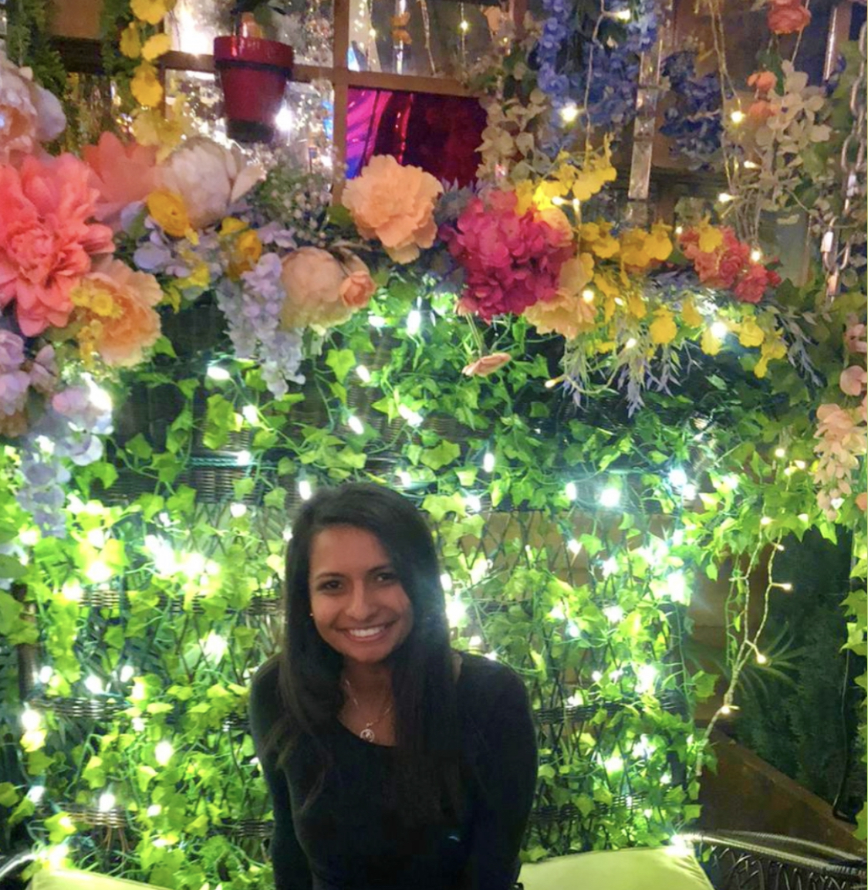

<!DOCTYPE html>
<html>

<head>
  <meta charset="utf-8">
  <title>Neha Patel</title>
  <link rel="stylesheet" href="css/styles.css">
  <link href="https://fonts.googleapis.com/css?family=Merriweather|Montserrat|Sacramento" rel="stylesheet">
  <link rel="icon" href="favicon.ico">
  <meta name="viewport" content="width=device-width, initial-scale=1">

<body>


<script>
function myFunction(x) {
  x.classList.toggle("change");
}
</script>

</body>
</head>
</html>

<body>
  <div class="top-container">
    <div class="title-text">
      <h1>Hi, I'm Neha.</h1>
      <h2>a <span class="pro">pro</span>grammer.</h2>
    </div>
  </div>

  <div class="middle-container">
        <div class="column">
          
        </div>
        <div class="row">
          <p class="intro">Hi! My name is Neha Patel. I am programmer. I am interested in Web and App development. Currently, I am working on some IOS applications using xCode, while also learning HTML and CSS independently. </p>
        </div>
      </div>
    </div>
    <hr>
    <div class="skills">
      <h2>Education</h2>
    </div>
    <div class="skill-row">
      <h3>Loyola University Chicago</h3>
      <p>•Masters of Science: Computer Science <br> •Start Date: May 2020 <br> •Expected Graduation: 2021</p>
      </div>
    <div class="skill-row">
      <h3>Loyola University Chicago</h3>
      <p>•Bachelor of Science: Computer Science <br> •Start Date: August 2020 <br> •Graduation Date: May 2020</p>
      </div>
      <div class="skill-row">
        <h3>Hoffman Estates High School</h3>
        <p>•High School Diploma <br> •Start Date: August 2012 <br>  •Graduation: June 2016</p>
        </div>

      <h2>Experience</h2>
      <div class="skill-row">
        <h3>Skills:</h3>
        <p>I am proficient in the following:
          <br>• Python <br>•Java
  <br>• C++
  <br>• C#
  <br>• CSS
  <br>• HTML
  <br>• ECE Level 1 Credential
  <br>• Microsoft Project and Office</p>

      </div>
      <div class="skill-row">
        <h3>Panhellenic Council, Vice President of Public Relations</h3>
        <p>•Responsible for all marketing and PR for Panhellenic Council
 <br>• Frequent use of Facebook, Twitter, and Instagram to promote positive

Panhellenic events <br>
• Aid the recruitment team in creating the recruitment Look Books
 <br>• Create promotion items, Panhellenic t-shirts, and other apparel
 <br>• Design Panhellenic event flyers and Facebook events</p>

      </div>
      <div class="skill-row">
        <h3>Kappa Delta Sorority, Founding Member of Theta Upsilon Chapter</h3>
        <p>•Founding Member of the Theta Upsilon Chapter at Loyola University Chicago</p>
        </div>
        <div class="skill-row">
          <h3>Nicholas Senn High School, Student Teacher</h3>
          <p>•Assist AP Computer Science students with their daily assignments.</p>
          </div>
          <div class="skill-row">
            <h3>AT&T, Retail Sales Consultant</h3>
            <p>• Hit sales quota
<br>• Courteously assist customers with service/product inquiries
<br>• Operate a function-heavy POS, wireless equipment, and a PC
<br>• Identify customer needs, make suggestions, and answer questions
<br>• Answer phone calls promptly, courteously and professionally
<br>• Able to understand customer needs and suggest personalized solution
<br>• Respond to customer concerns quickly, effectively and courteously
<br>• Recognize potential theft/loss situations assisting to deter theft
<br>• Assist with inventory maintenance</p>
            </div>
            <div class="skill-row">
              <h3>Hollister, Brand Representative</h3>
              <p>• Engaged with customers to successfully sell products
<br>• Handled all register transactions and maintenance of the store
<br>• Worked with store managers in store opening and closing duties, along with
maintaining the store’s achievement sales plan</p>
              </div>
          <div class="skill-row">
            <h3>Friendship Village, Volunteer</h3>
            <p>•Provided assistance to medical staff by transporting patients from the Doctor’s Office to various locations.
<br>•Spent time talking to elderly and did creative activities
<br>•Maintained cleanliness and organization of the lunch room</p>
            </div>
    </div>
  </div>


  <div class="bottom-container">
    <a class="footer-link" href="https://www.linkedin.com/in/nehapatel083">LinkedIn</a>
    <a class="footer-link" href="contact.html">Contact Me</a>
    <p class="copyright">© 2020 Neha Patel </p>
  </div>
</body>


</html>
